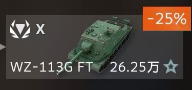
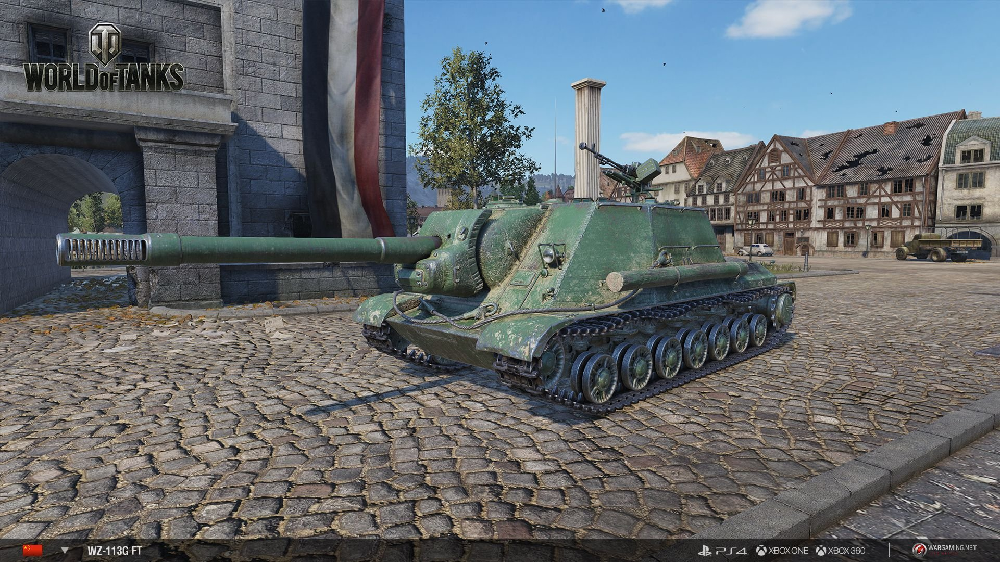

Congratulations! You pass the test and get Tank Destroyer WZ-113G FT!
Introduction
WZ-113G FT 坦克歼击车的概念基于 113 坦克的设计，其开发始于 1963 年。
这两个计划都没有导致生产。
通往中国顶级坦克歼击车的旅程从三辆鬼鬼祟祟的战车开始，它们拥有广阔的视野范围和相当精准的火炮。
他们都可以依靠高 DPM 快速有效地消灭敌人。
中系歼击车是从狙击手到格斗手的自然发展，可以完美地作为二线支持者。
良好的机动性让他们可以快速占据关键位置，而高 DPM 将是受伤对手的最后一枚棺材钉。

The process must be hard!
Click here to get other tanks.